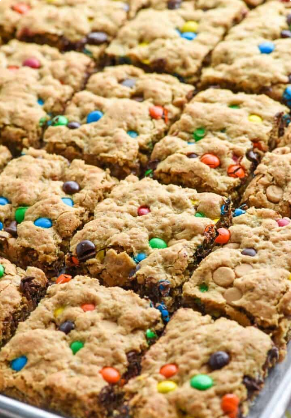

Monster Cookie Bars
Prep Time: 15 minutes
Cook Time: 20 minutes
Total Time: 35 minutes
Servings: 36 bars
These gluten-free cookies contain oats, chocolate chips, and M&M's
These are my favorite type of cookies, and bars are so much faster to make since you don't have to roll out each individual cookie.
This is a modified version of Samantha Skaggs's recipe from Five Heart Home .
Equipment Needed
- 18x13x1-inch rimmed half sheet pan
Ingredients
- 4 eggs
- 1 1/2 cups sugar
- 1 cup brown sugar
- 3/4 teaspoon salt
- 1 tablespoon pure vanilla extract
- 2 cups (one 16-oz jar) peanut butter
- 5 tablespoons butter (room temperature)
- 2 1/2 teaspoons baking soda
- 18 oz (1 small tub) old-fashioned rolled oats
- 1 cup M&Ms
- 1 cup semisweet chocolate chips
Instructions
- Preheat oven to 350°F. Generously butter the pan. Set aside.
- In a very large bowl (using a spoon or an electric mixer), mix together the eggs and sugars until well-combined. Beat in the salt, vanilla, peanut butter, and butter until smooth. Stir in the baking soda (make sure there aren't any lumps) and the oats, then add the M&Ms and chocolate chips and mix until just combined.
- Spread the batter into the prepared baking pan, smoothing the top into an even layer and pressing down firmly. Bake for 16 to 22 minutes or until edges are very light golden brown and center is set. Allow to cool in the baking pan before slicing and serving.
